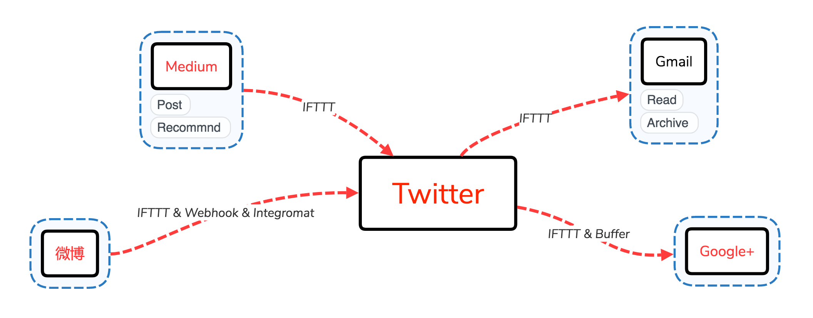
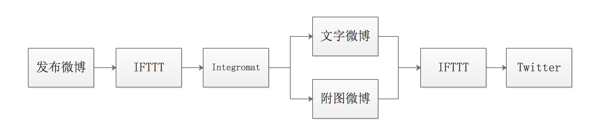
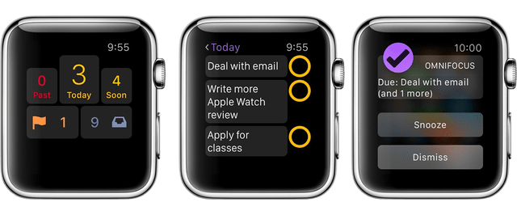
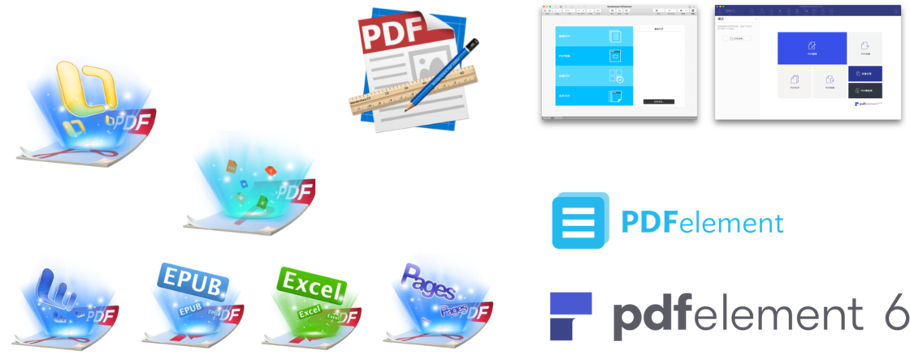

同步微博至 Twitter 的新方式
IFTTT 同步微博至 Twitter 的体验太糟糕，最大的缺陷是无法较好地处理文字和附图微博。本文将介绍一种进阶方法，利用 IFTTT 和 Integromat 同步，以解决只用 IFTTT 同步微博的缺陷。

IFTTT & Integromat 同步微博和 Twitter
由于微博 API 限制，IFTTT 同步微博到 Twitter 的体验奇差，无法恰当区分纯文字、带图片的微博和转发微博。而以 Integromat 为纽带建立「微博 & IFTTT & Twitter」之间的联系，则可以解决这些问题。Integromat 可以区分文字微博、附图微博，并过滤转发微博，原理如下：

Integromat is the glue of the internet. Integromat is the most advanced online automation platform. We've redefined work automation so everyone can get back to what matters the most.
大版本更新，这次 MWeb 3.0 又带来了什么
少数派精选并推荐至首页：点此查看
责编文刀漢三对本文少数派版本做了大量修改，本文著作权归作者唐小筑所有，并授权少数派独家使用，未经少数派许可，不得转载使用。
MWeb 作为 macOS 上体验优秀的 Markdown 应用，在管理知识、写作、发布上持续发力，现在它更新了 3.0 大版本，本篇文章就带你领略其风采。
开发者说：MWeb 名称为 Markdown --> Web ，最初的想法是简单快捷地把 Markdown 写的文档发布到 Web 上。现在也一直在写作和发布到 Web 上优化。解决的是管理知识、写作、发布的问题。然后 MWeb 采用的是 Github Flavored Markdown 语法，一直是如此。
在 macOS 平台 Markdown 编辑器同质化严重的今天，MWeb 以其出色的功能和体验独树一帜。2014 年 1.0 版本发布至今，MWeb 付费用户始终可以免费更新，3.0 大版本是首次付费更新。因为开发者 Otis 认为软件没超过 3 年以上，都没有另起的理由。
- 你是否需要一款体验优秀且跨 macOS 和 iOS 的双平台 Markdown 编辑器？
- 是否需要数分钟内生成和发布静态博客，并用 GitHub 等平台托管图片资源？
- 是否需要直接发布文 WordPress、Medium、新浪博客等平台？
- 是否需要以标签和分类管理 Markdown 文档？
- 是否需要搭建个人 Wiki 知识库和支持全局检索？
那么 MWeb 3.0 将是你的不二选择，作为一款专业的 Markdown 写作、记笔记、静态博客生成软件，此次更新表面来看仅增加了数个功能和细节改善，似乎不堪称为大版本更新，但看不见的背后是大量代码的重构，如 iOS 11 升级至 iOS 12 一般。

臻至更高的高峰：MarkEditor 2.0 再进化!
少数派精选并推荐至首页：点此查看
本文著作权归作者唐小筑所有，并授权少数派独家使用，未经少数派许可，不得转载使用。
纯粹式 Markdown 编辑器有很多，其中 Typora 是所见所得编辑器的优秀代表；令人耳目一新的多功能编辑器也不少，比如 Bear、MWeb 等，各有各的特色，而 MarkEditor 2.0 是一款很贴近 Markdown 文字编辑者且让人情不自禁喜爱的工具，它已经不仅仅是多功能 Markdown 编辑器，甚至可看作一切文字工作的处理中心。

SimpRead：简悦你的知识消化历程
本文被少数派精选：点此查看
在互联网上如少数派这样排版良好的网站不少，但排版欠佳的也不少，类似 Safari 阅读模式的功能就比较重要了。而且无论排版好差，我们晚间也许更偏爱暗色背景。遇到好文，也许还想保存或备份到 Pocket、OneNote、印象笔记以温习或整理。
目前，在 Chrome Web Store 中可以检索到的阅读模式扩展程序仅有个位数，如 Just Read、Read Mode、阅读模式等，SimpRead（简悦）是其中集大成者，达成「简单阅读，愉悦心情」之目的。
Apple Watch 堪为最佳的伴侣
本文被少数派精选：点此查看
如果使用 Apple 设备，Apple Watch 堪为最佳伴侣，但也并非必需品，单身贵族一样可以过得好…… 但有个伴侣可能更好。
初入 Apple Watch 时，我以为它会成为我的效率工具，这也是劝服自己花钱的最主要理由。为此我特意下载了 OmniFocus 以示决心，不出两周我渐渐明白其实所谓效率工具的确只是我花钱的理由，而非内心对它真实的定位：一个好伙伴，可以帮我做一些事，让我能更懒。

墙内开花墙外香，也许是最优秀的全能型 PDF 应用
本文被少数派精选：点此查看
谈到 macOS 上的 PDF 应用，大概都会想起预览、Skim 及其衍生品、Adobe Acrobat，以及声名远扬的 PDF Expert，但你也许不曾注意到一款墙内开花墙外香的全能型 PDF 应用：PDFelement，由 万兴科技（Wondershare）出品。在 万兴科技中国官网 可以查看全世界用户的热力图。
不夸张地讲，PDFelement 不逊色于任何我们所想起的 PDF 应用，它功能全面但每一项又如此专业，堪称匠心独具的工具和艺术品。最初 Wondershare 家的 PDF 相关作品是各自独立的，15 年才将所有功能融合并推出 All-in-One 应用 PDFelement 5，于 17 年 4 月推出新应用，也即让我心血来潮写测评的 PDFelement 6，这是一款令我无限接近满意的作品。
PDFelement 6
Pro= 综合性 PDF 工具套装 = PDF 阅读器 + PDF 注释器 + PDF 编辑器 + PDF 转换器 + PDF 创建器 + 表单填写和创建 +OCR 字符识别+数据提取+批量处理+ 更多……

对我而言 iPad Pro 距完全替代电脑仅有一步
本文被少数派精选：点此查看
我在 6.13 收到 10.5 寸 iPad Pro，本来的目的是为了批注论文，然后实际上却替代了许多电脑上完成的任务，且以我自身的需求为行文结构听我慢慢道来。
外设的选择
买 Pro 不买笔，不如回家削铅笔。不得不说 Apple Pencil 是 iPad Pro 的必需品，否则不如购买 iPad 其他系列。我同时淘宝了一个专用笔袋来放置 Apple Pencil 及转接头、擦拭布、取卡针。关于键盘，我想了很久。最优先考虑的是 Slim Combo 键盘 & 保护壳，为此我多次催促 Apple 客服，但最后却没有购买。原因有二：Slim Combo 是可拆卸式键盘，无法合盖以覆盖屏幕，也就不能随意将 iPad 放入书包；虚拟键盘才是最常用的，因为许多应用对虚拟键盘做了优化，有许多实用的快捷按钮，而实体键盘可能只需要在大量打字的时候使用。故我认为如果不得不使用键盘，最佳的组合是 Apple 官方皮革款保护套与罗技 K480 或 K380 等蓝牙键盘。
本章小结：我认为并不需要保护套有一个放 Apple Pencil 的位置，虽然最初我是被 Slim Combo 这点所吸引。总之，上述的外设是我经过深思熟虑后最能接受的组合，平时我也会尽量尝试虚拟键盘或语音输入。
文献的管理与批注
如果只用 iPad Pro 管理与批注文献，Papers for iOS 是最佳的选择，颜值与功能堪称最佳。Papers 与其他文献管理工具一样（如 Zotero）可以借助书签从 Safari 上收集文献，并且可以在 Word 等应用中插入神奇引用代码，这意味着你完全可以在 Word for iOS 上写论文，但还有不得不做的一步：在电脑上格式化神奇引用代码。如果在 iPad 上可以做到「格式化」这点，那就真得完全可以脱离电脑了。
Copyright © 2018 CC BY-NC-SA 4.0